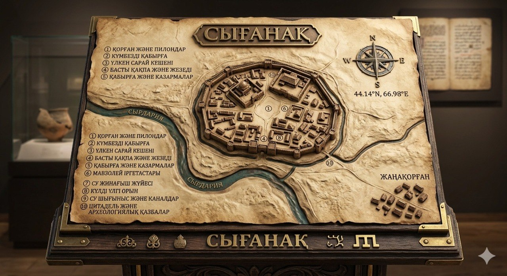
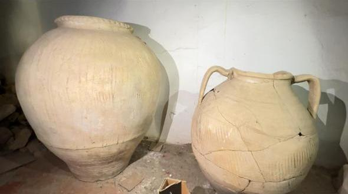
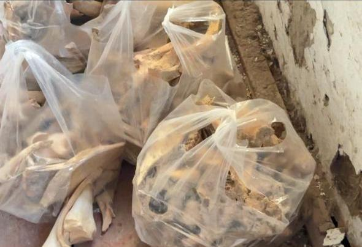
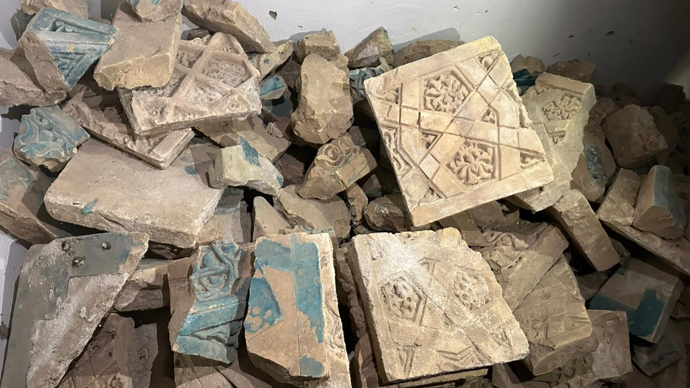
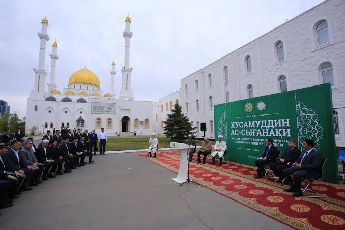

Сырдария бойындағы ұлы қаланың із-дерегі.
Сығанақ — Сырдарияның оң жағалауында орналасқан ортағасырлық қала орны. IX ғасырда қалыптасқан ол XIII–XIV ғасырларда аймақтағы саяси және мәдени өмірдің маңызды орталығына айналды. Қала Жібек жолының бағыттарын байланыстыратын сауда түйіні ретінде дамыды: қолөнершілер мен саудагерлер осында тоғысып, тауар мен идея алмасқан. XIII ғасырдағы Моңғол шапқыншылығы қаланың тағдырына терең із қалдырды, бірақ кейінгі ғасырларда өмір мен экономиканы қайта қалпына келтіру әрекеттері жүргізілді.
Алтын Орда кезеңінде Сығанақ аймақтық басқару мен сауда желілерінің бөлігі болып, Орта Азия мен дала аймақтары арасындағы байланысты нығайтты. Қала қорғаныс құрылыстары мен базар алаңдарымен дамыды; діни-мәдени ортаның ықпалы күшейді. Бұл дәуір қаланың сыртқы саудадағы рөлін кеңейтті және көп мәдениетті қоғамның қалыптасуына ықпал етті.
Саяси орталықтың ауысуы, су жолдарының өзгеруі және соғыстардың салдары қаланың экономикалық әл-ауқатын нашарлатты. Уақыт өте келе тұрғындар саны азайды, ғимараттар бос қалды. Бүгінде Сығанақ археологиялық және мәдени мұра ретінде зерттеледі: оның жерүсті және жерасты іздері бізге ортағасырлық Қазақстанның күрделі тарихын түсіндіруге көмектеседі.
Қала орнының қалыптасуы, ерте сауда байланыстары.
Даму шегі, Жібек жолы, Моңғол дәуірінің соққылары.
Өңірлік маңыз, сауда және мәдениет өркендеуі.
Түсу, бос қалу, мұра ретінде зерттеу.
Бұл бөлім «Менің Отаным — Қазақстан» республикалық туристік экспедиция жорығы аясында Сырдария ауданы мектеп оқушыларының Сығанақ тарихи орнына арналған жобасы туралы баяндайды.
Сығанақ — Қазақстанның ортағасырлық тарихында ерекше орын алатын көне қалалардың бірі. Бұл аймақ тек тарихи-мәдени мұрамен ғана емес, сонымен қатар табиғи-географиялық және экологиялық ерекшеліктерімен де құнды.
Сығанақ өңірін кешенді туристік-өлкетану экспедициясы арқылы (экологиялық, географиялық және тарихи-мәдени бағыттарда) зерттеп, оның табиғи және тарихи құндылықтарын анықтау, сақтау және насихаттау.
Туристік бағыттың тұжырымдамасы, көрме немесе презентация материалдары және осы веб-сайт — экспедицияның нәтижелерін жас ұрпаққа жеткізу құралы.
Экспедиция барысында Сығанақ жері туралы нақты мәліметтер жиналды:
Бұл зерттеу жұмысының күнделікті өмірге және білімге пайдасы зор:

Сығанақ қаласының тарихи картасы
Жасөспірімдер экспедициясы — Сығанақ, 2026




Сығанақ IX–XIV ғасырларда өмір сүрді
Орта Азиядағы маңызды сауда орталығы болды
Моңғол шапқыншылығынан кейін қайта тұрды
Қазіргі Сырдария ауданында орналасқан
Жібек жолының маңызды тоғысында тұрды